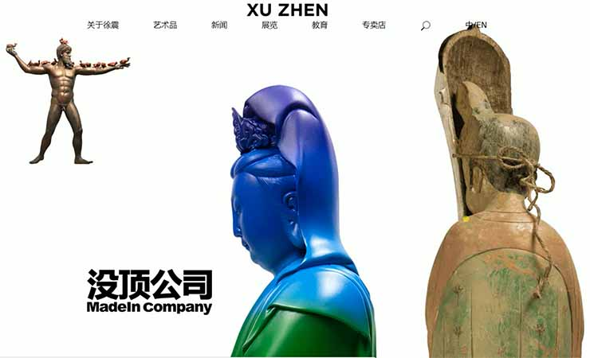
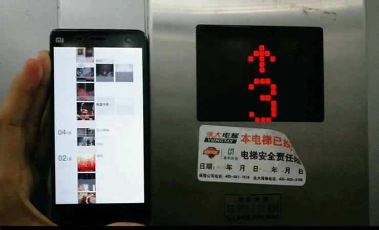
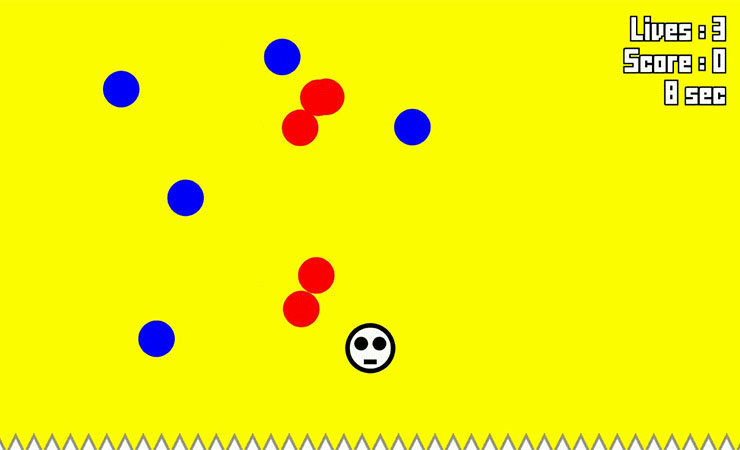

徐震/沒頂網站
Xuzhen/MadeIn Website
Xuzhen is one of the top contemporary artists in China. To echo with his iconic style in Pop Art with celeration of fast consumption, the website is extensively designed with playful interactions with a touch of minimalism. Technically the front-end development is crafted with jQuery and CSS animation. It is made possible with collaboration of Sudden Design Studio.
Xuzhen is one of the top contemporary artists in China. To echo with his iconic style in Pop Art with a celeration of fast consumption, the website is extensively designed with playful interactions with a touch of minimalism. Technically the front-end development is crafted with jQuery and CSS animation. It is made possible with collaboration of Sudden Design Studio.
某宝反广告黑客插件
Anti-Ad Plug-in
artist website of POP art in minimalism style
hacker plug-in
该插件受艺术家佩恩恩委托开发。用户在插件界面输入关键字后，插件将模仿人类浏览页面的行为进行搜索，比如输入关键字，点击按钮，滚动页面，从而制造虚假的浏览记录，干扰某宝的广告和产品推荐机制。用户可以选择输入跟自己偏好相关或不相関的关键字来让电商网站更精准定位自己的需求或者达到相反的效果。插件只提供chrome浏览器版本。
This bot is a chrome plug-in that searches keywords automatically on e-commerce website to manipulate its recommendation system.

电梯朋友圈
Elevator Moment
artist website of POP art in minimalism style
30 meter social media wall interaction
该作品受艺术家shaw委托开发。出于建筑师背景，shaw选择用米来衡量朋友圈的长度。通过手机传感器数据与楼层高度和运动趋势的匹配，让长达30米的朋友圈图像跟随楼层高度自动滚动，成为一个时刻在于环境交互的社交媒体。
Have you thought about the length of your social media? It is 30 m2 for the author's wechat moment.
In order to display this full image, we placed a mobile phone which scroll it automatically corresponding to the moment of the elevator. Thus audience would have a brand new experience to check out social media.

X in White
这个装置追踪用户脑波活动输出现场的灯光变化。观众可以带上耳机体验语音催眠。正如在RBG中0到255之间，观众与装置产生微妙的关系，或沉浸式冥想或玩起挑战意志游戏。该作品曾在Basement6，视觉艺术中心（M50）和上海法国领事馆展览过。
This installation visualizes brainwave data of concentration and relaxation in lighting. It is an immersive space of meditation, a game of self control and a data visualization project.

Mao in the Sky
It is a web animation for my first art serie #RicherThanJeffKoons. It reflects on the value of money during my career transition from a corporate employee to a self-employ digital artist. The 100 yuan is the note with the biggest face value in Chinese currency. The pink and baby blue color set a cheerful tone for visual. While the parade-like computational generative movement with the serious Mao profile in the sky indicate a playful connection of human activity VS nature/ freedom.
It is a web animation for my first art serie #RicherThanJeffKoons. It reflects on the value of money during my career transition from a corporate employee to a self-employ digital artist. The 100 yuan is the note with the biggest face value in Chinese currency. The pink and baby blue color set a cheerful tone for visual. While the parade-like computational generative movement with the serious Mao profile in the sky indicate a playful connection of human activity VS nature/ freedom.
Money Generator Lottery
Money Generator Lottery
It is the most generous lottery in human history. To put it simple, you can get as much money as you want in this lottery (even better if you trade Mario coin). It is the second piece for my first art serie #RicherThanJeffKoons. Most users get a sudden excitement when they realize the rule to generate money. But very soon they will stop playing out of sheer boredom. But you cannot deny that everyone likes a quick injection of Mario Coins.
It is the most generous lottery in human history. To put it simple, you can get as much money as you want in this lottery (even better if you trade Mario coin). It is the second piece for my first art serie #RicherThanJeffKoons. Most users get a sudden excitement when they realize the rule to generate money. But very soon they will stop playing out of sheer boredom. But you cannot deny that everyone likes a quick injection of Mario Coins.
Sound Flapping Bird
该网页游戏邀请用户通过控制声高来玩游戏，把音量高低变成摇杆，打破传统安静的游戏物理空间，提供崭新的游戏体验。该游戏采用HTML5 Canvas功能制作，受API限制仅限safari和ios以外的浏览器和设备使用。
Control your voice volumn to play flappy bird in your desktop or mobile device. It create a fun and engaging gaming. Users are highly encourage to play in public space. Due to privacy constraint issue, it is not avaiable on ios device and safari browser.